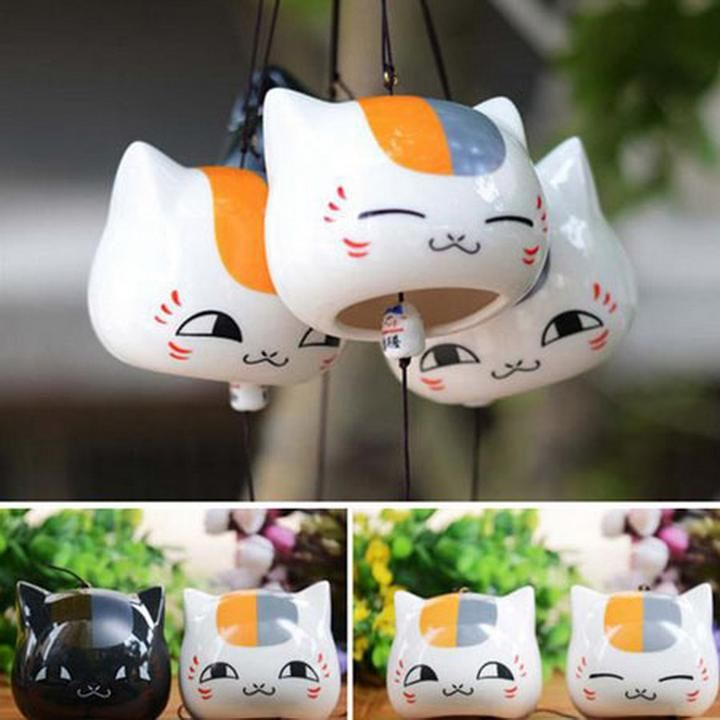
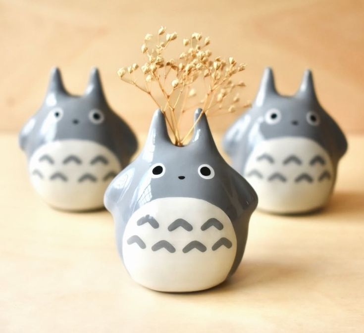

At Kawaii Craft, we believe that every item can spark joy. What started as a tiny Tokyo street stall with two artists in 2012 has now grown into a collective of over 30 artisans across Japan. We blend traditional craftsmanship with kawaii (cute) culture, spreading smiles and sparkles globally.

Our Philosophy
Kawaii isn’t just an aesthetic – it’s a philosophy. We believe in handmade over machine-made, smiles over perfection, and tiny joyful details over mass production. We draw inspiration from nature, folklore, and the vibrant colors of kawaii culture.

Meet the Makers
Each of our pieces is made by someone who pours their love into it. From pastel pottery to plushie paperweights, you’ll meet real humans with real dreams behind every kawaii creation.